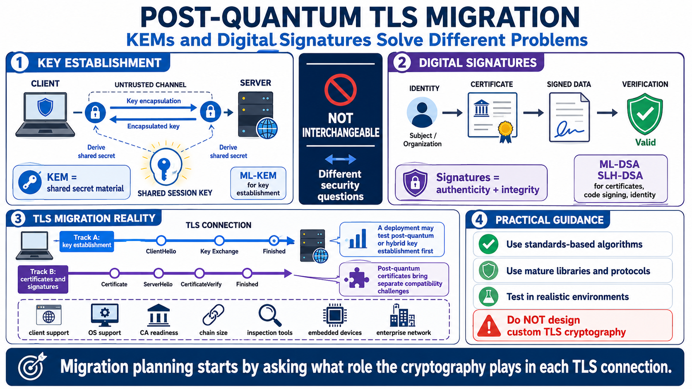

PQC Building Blocks for TLS
Connecting to LMS... Progress: in progress

Narration
The two building-block categories most relevant to TLS migration are key establishment and digital signatures. A key encapsulation mechanism, or KEM, helps two parties establish shared secret material over an untrusted channel. In post-quantum planning, ML-KEM is the main KEM concept teams will encounter. It is intended for key establishment use cases, not for signing certificates or authenticating software by itself.
Digital signatures solve a different problem. They help a verifier confirm that data was signed by the holder of a private key and that the signed data has not changed. ML-DSA and SLH-DSA are post-quantum digital signature concepts practitioners may see in discussions about certificates, code signing, identity, service authentication, and long-term verification. They are not interchangeable with KEMs because they answer a different security question.
That distinction matters for TLS. A deployment may experiment with post-quantum or hybrid key establishment before the broader certificate ecosystem is ready for post-quantum signatures. Post-quantum certificates and certificate chains introduce separate compatibility concerns, such as signature size, chain size, client support, certificate authority readiness, browser behavior, operating system trust, embedded devices, and enterprise inspection tools. One migration track does not automatically solve the other.
Teams should use standards-based algorithms through mature libraries and protocols. Custom TLS cryptography is dangerous because security depends on more than the algorithm name. It depends on negotiation behavior, transcript binding, downgrade resistance, error handling, implementation quality, side-channel considerations, interoperability, and maintenance. The practical advice is simple: do not design private post-quantum TLS constructions. Track reputable standards work, use maintained libraries, and test in realistic environments.